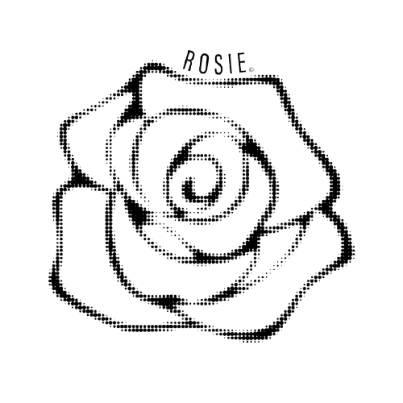
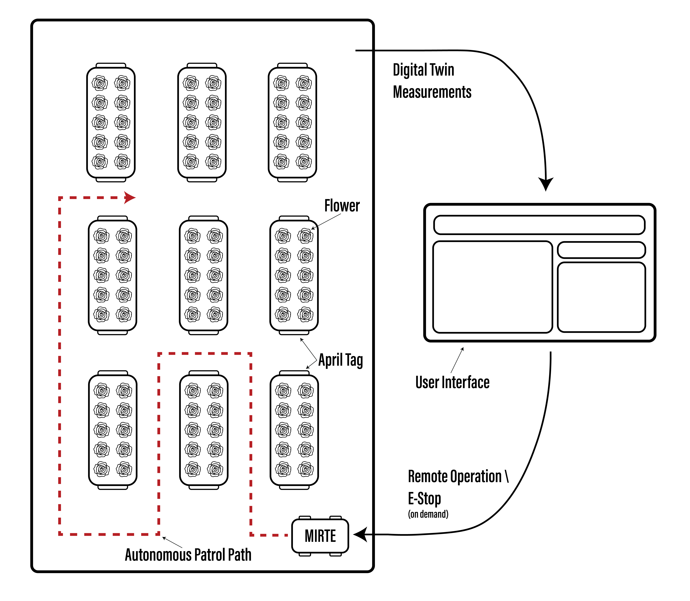
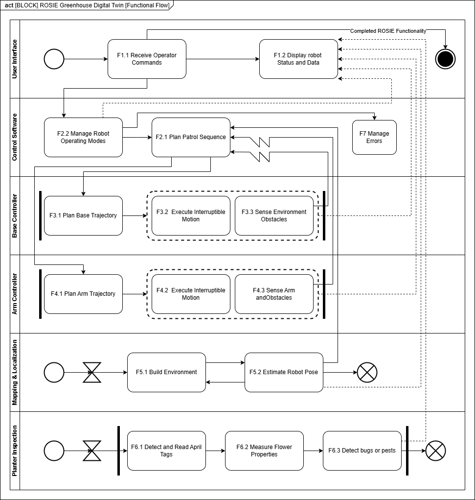

Greenhouse Robotics / Digital Twin
ROSIE Digital Twin
An autonomous greenhouse inspection system that maps and builds a digital record for remote operators.

ROSIE: Rose Observing System for Independent Environments
Overview
For this school project, our assigned client scenario was FloraNova, a fictional commercial flower greenhouse seeking a reliable way to create and maintain a greenhouse digital twin.
We supplemented the brief with domain research and more than five interviews with real greenhouse operators. These conversations confirmed that outside intervention in a closed greenhouse can introduce pests and disrupt experiments or crops. In response, our team created ROSIE, the Rose Observing System for Independent Environments, as a product concept for remote and repeatable greenhouse inspection.

The proposed ROSIE greenhouse inspection system.
Proposed Solution
Our solution combines a MIRTE Master mobile robot with an operator web interface. The robot autonomously maps and patrols the greenhouse, inspects individual planters, and returns observations to a digital record that can be reviewed without repeatedly entering the controlled environment.
We developed the concept through a systems-engineering process, defining mandatory and optional requirements alongside measurable outcomes. The operator interface was a primary design focus because it is the part of the system the end user directly experiences. We aimed to make it intuitive and easy to understand while still presenting enough detail to communicate the robot's state, progress, and inspection results.

Functional flow of entire system.
Functional Flow
Operator control: The web interface sends commands to ROSIE and visualizes its current mode, location, inspection status, and collected data.
Autonomous operation: The robot software coordinates mapping, localization, route planning, base motion, and arm movement while handling operating modes and errors.
Planter inspection: At each planter, ROSIE reads AprilTags, positions its camera using defined arm poses, measures flowers, and runs vision methods for flower and pest detection before recording the results.
Full ROSIE workflow demonstration in simulation.
Simulation Demo
This simulation demonstrates the complete workflow in a digital version of the same greenhouse used for physical testing. The operator starts the mapping process, and ROSIE uses SLAM through ROS 2 Nav2 to map and navigate the space autonomously.
After mapping, the MIRTE robot visits each planter. The interface exposes state-machine feedback, such as inspection at Planter 1, so the operator can follow its progress. Defined arm poses and YOLO-based vision allow the system to detect and count flowers. Once the greenhouse has been inspected, the interface creates a timeline showing when each planter was visited together with AprilTag measurements and flower counts.
Physical demonstration of mapping planter inspection.
Real-World Demo
In the physical demonstration, the MIRTE robot maps the greenhouse and then inspects the first planter using the same process developed in simulation. This validates the core transition from the simulated workflow to the real robot and greenhouse environment.
The operator interface was running during this test, but it was not captured in the recording.